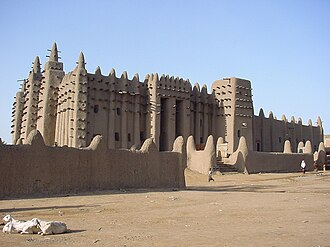

简介
La grande mosquée de Djenné est situé à Djenné, au Mali, dans la plaine alluviale du Bani, affluent du Niger. Cette mosquée est le plus grand édifice du monde en adobe ou banco ; elle est considérée comme la réalisation majeure du style architectural soudano-sahélien, tout en reflétant des influences islamiques.
المسجد الكبير هو أكبر صرح من الطوب اللبِن في العالم، ويعتبره الخبراء أعظم مثال للمعمار في الرقعة الأفريقية المعروفة باسم بلاد السودان والساحل وإن كان الأثر الإسلامي واضحا فيه. كما يعتبر، بلا منازع، من أهم وأبرز معالم القارة السمراء ككل. ولهذا صنفته هيئة «اليونيسكو»، مع المدينة القديمة في جينيه نفسها، «تراثا عالميا يتوجب على الأسرة الدولية حمايته». ومدينة جينية تعد من أقدم المدن المعروفة في جنوب الصحراء الكبرى. في القرن السادس عشر تحولت إلى مركز للعلوم الإسلامية.
The Great Mosque of Djenné in the Sudano-Sahelian architectural style is the largest adobe brick building in the world. The mosque is located in the city of Djenné, Mali, on the flood plain of the Bani River. The first mosque on the site was built around the 13th century, but the current structure dates from 1907. As well as being the centre of the community of Djenné, it is one of the most famous landmarks in Africa. Along with the "Old Towns of Djenné", it was designated a World Heritage Site by UNESCO in 1988.
Cenne Ulu Camii, birçok mimar tarafından Sudani-Saheli mimari stilinin en muazzam eserlerinden biri olarak kabul edilen büyük kerpiç bina. Cami, Mali'nin Bani Nehri sel ovasındaki Cenne şehrinde yer almaktadır. İlk cami 13. yüzyılda inşa edilmiştir, ama şimdiki yapı 1907'ye dayanır. Cenne halkının merkezidir ve Afrika'nın en meşhur yerlerindendir. "Cenne Eski Kasabaları" ile beraber 1988'de UNESCO tarafında Dünya Mirası listesine eklenmiştir. Rüzgar ve yağmurun aşındırdığı camiyi, yerel halk her yıl yeniden çamurla sıvar ve bu da mantolama görevi görür.
Masjid Raya Djenné adalah bangunan dari lumpur terbesar di dunia dan dianggap oleh banyak arsitek sebagai gaya arsitektur Sudano-Sahelian terbaik. Masjid ini terletak di kota Djenné, Mali, di dekat Sungai Bani. Masjid pertama di tempat ini dibangun pada abad ke-13. Selain merupakan pusat komunitas Djenné, kota ini juga merupakan lambang terkenal Afrika. Bersama dengan "Kota Kuno Djenné", tempat ini menjadi Situs Warisan Dunia UNESCO pada tahun 1988.
مسجد جینے کچی اینٹوں سے تعمیر کردہ دنیا کی سب سے بڑی عمارت ہے اور سوڈانی۔ساحلی طرزِ تعمیر کا سب سے بڑا شاہکار سمجھی جاتی ہے۔ یہ مسجد مالی کے شہر جینے میں قائم ہے۔ اس مقام پر پہلی مسجد تیرھویں صدی میں قائم کی گئی تھی۔ جبکہ موجودہ تعمیر سن 1907ء سے موجود ہے۔ مسجد کی مرکزی دیواریں تین فٹ چوڑی ہیں۔ سال بھر کی موسمیاتی تبدیلیوں سے مسجد کو پہنچنے والے نقصان کی مرمت کے لیے ایک سالانہ تہوار منعقد کیا جاتا ہے۔ اس تہوار میں، کئی روز سے تیار کیا گیا گارا، مسجد کی دیواروں پر لیپ دیا جاتا ہے۔
Die Große Moschee von Djenné ist das größte sakrale Lehmgebäude und gilt als ein Höhepunkt der sudanesisch-sahelischen Architektur in Mali. Die Moschee ist der Mittelpunkt der Stadt Djenné, im Binnendelta des Niger. Die Moschee zählt zu den berühmtesten Bauwerken Afrikas und wurde von der UNESCO im Jahr 1988 gemeinsam mit der Altstadt Djennés und einigen umliegenden Ausgrabungsstätten zum Weltkulturerbe erklärt.
La Gran Mezquita de Djenné es el mayor edificio sagrado hecho de barro del mundo, y también el mayor hecho de este material de una sola pieza con una superficie de 75×75m y está considerada una cumbre de la arquitectura sudanesa-saheliana. La mezquita está en el centro de la pequeña ciudad de Djenné, Malí, en el delta interior del río Níger. Es uno de los monumentos más conocidos de África y desde 1988 está considerada, junto con el casco antiguo de Djenné, Patrimonio de la Humanidad por la Unesco.
La Grande moschea è una moschea di Djenné, nella regione di Mopti, in Mali, il più grande edificio al mondo in adobe.
A Grande Mesquita de Jené é o maior edifício em adobe do mundo, e é considerada por muitos arquitetos como a maior realização do estilo Sudano-Saheliano, embora tenha muitas influências islâmicas. Localiza-se na cidade de Jené, no Mali, a qual foi declarada como patrimônio mundial pela Unesco em 1988.
De Grote moskee van Djenné in Mali geldt als een van de hoogtepunten van de architectuur uit de Sahel. Het is het grootste van adobe gemaakte gebouw ter wereld en heeft een oppervlakte van 50 bij 50 meter. Omdat het gebouw erg kwetsbaar is voor wind en regen wordt het elk jaar opgeknapt met nieuwe lagen leem. Hier werkt de hele gemeenschap aan mee, onder leiding van de Bareys, een 15e-eeuwse kaste van bouwer-magiërs. De palmtakken die overal uit het gebouw steken dienen niet alleen als versteviging maar ook als steigers tijdens het onderhoud. Deze takken zorgen er verder voor dat het gebouw bestand is tegen temperatuurschommelingen en veranderingen in de luchtvochtigheid. Het gebouw staat op een anderhalve tot twee meter hoog terras dat de moskee afschermt van de markt die elke week op het plein ernaast wordt gehouden.
杰内大清真寺 是一座苏丹-萨赫勒式巨型土坯建筑。该清真寺位于马里杰内市巴尼河的河漫滩上。该地的首座清真寺始建于13世纪左右，但现今的这座建筑只可追溯到1907年。该建筑是杰内市的城区中心建筑，也是非洲最著名的地标性建筑物之一。1988年，这座清真寺与同城的杰内古塔一同被联合国教科文组织列入世界文化遗产名录。
泥のモスク はマリ共和国の都市ジェンネにある巨大なモスク。1988年にユネスコの世界遺産に登録された「ジェンネ旧市街」の象徴的建造物である。
젠네 모스크 는 세계에서 가장 큰 진흙벽돌 건물로 이슬람 문화의 영향을 받은 수단-사하라 양식 건축물의 대표적인 걸작이다. 모스크는 말리의 젠네에 위치하고 있으며, 바니강 유역의 평야에 있다. 아프리카의 가장 유명한 랜드마크 중 하나로 1988년 UNESCO의 세계유산으로 등록되었다.
Дженне́нская собо́рная мече́ть — самое большое глинисто-наносное здание в мире. Мечеть расположена в городе Дженне (Мали) в пойме реки Бани. Помимо того, что мечеть является центром общины Дженны, она также является одной из самых известных достопримечательностей Африки. В составе объекта «Старый город Дженне» мечеть в 1988 году включена в список Всемирного наследия ЮНЕСКО.
มัสยิดใหญ่แห่งเจนเน เป็นสิ่งก่อสร้างที่ถูกวิเคราะห์โดยสถาปนิกหลายคนว่าเป็นหนึ่งในความสำเร็จของสถาปัตยกรรมซูดาน-ซาเฮล ตั้งอยู่ในเมืองเจนเน ประเทศมาลี บนที่ราบน้ำท่วมถึงของแม่น้ำบานี มัสยิดแรกสร้างขึ้นในคริสต์ศตวรรษที่ 13 แต่สิ่งก่อสร้างปัจจุบันถูกสร้างใน ค.ศ.1907 มัสยิดนี้ถูกรวมกับ "เมืองเก่าแห่งเจนเน" ในแหล่งมรดกโลกของยูเนสโกใน ค.ศ. 1988
Marea Moschee din Djenné este cea mai mare clădire din argilă din lume. De asemenea, este considerată de specialiști ca fiind cea mai mare clădire din spațiul Sudano-Sahelian, cu influențe islamice. Este situată în orașul Djené, Mali pe malul râului Bani. În anul 1988 a fost inclusă pe lista locurilor din Patrimoniul Mondial UNESCO.
故事与传述
传统说法献出自己宫殿的国王
根据该地区的编年史，如17世纪写成的《苏丹史》（Tarikh as-Sudan），杰内国王科伊·昆博罗在13世纪皈依了伊斯兰。他下令拆除了自己的宫殿，把那块地方改建成清真寺，然后在旁边的东侧为自己另建了一座宫殿。他的继任者增建了清真寺的塔楼，再下一位国王修建了围墙。确切的日期和细节来自当地的口头和书面传统。
出处： Wikipedia : Great Mosque of Djenné · UNESCO : Old Towns of Djenné
历史事实被废弃，1907年重建
19世纪初，富拉尼人首领塞库·阿马杜攻占了杰内；他不赞成那座旧清真寺，认为它装饰得过于华丽，便任其倾颓。1834年至1836年，他建造了一座没有塔楼、更为简朴的清真寺。1906—1907年，在杰内泥瓦匠行会会长伊斯梅拉·特拉奥雷的主持下，这座城市在原址上重建了大清真寺。这就是现在的建筑：世界上最大的土坯建筑。
历史事实抹墙节
每年雨季过后，雨水侵蚀了土墙，杰内全城的人都会聚在一起，为清真寺重新抹上泥灰。在之前的几天里，人们在坑里调制泥土，常常是男孩们在里面一边玩耍一边搅拌。到了那一天，男人们攀上从墙上伸出来的棕榈木杆，这些木杆就是永久性的脚手架，他们把泥土抹到墙上，女人们则负责送水。这个节日融合了音乐、聚餐和共同劳动。自1988年起，这座清真寺和老城被列入联合国教科文组织世界遗产名录。
出处： Wikipedia : Great Mosque of Djenné · UNESCO : Old Towns of Djenné
在地图上
资料与链接
- Wikipédia — Français
- Wikipédia — العربية
- Wikipédia — English
- Wikipédia — Türkçe
- Wikipédia — Bahasa Indonesia
- Wikipédia — اردو
- Wikipédia — Deutsch
- Wikipédia — Español
- Wikipédia — Italiano
- Wikipédia — Português
- Wikipédia — Nederlands
- Wikipédia — 中文
- Wikipédia — 日本語
- Wikipédia — 한국어
- Wikipédia — Русский
- Wikipédia — ไทย
- Wikipédia — Română
- Wikidata — Q683632
数据：维基数据（Wikidata，CC0），每3个月更新一次。年份是该建筑已知最早的建造年代：对于后来才成为清真寺的建筑（如圣索菲亚），则是原建筑的年代。照片：维基共享资源（Wikimedia Commons），作者和许可协议见每张照片的页面。